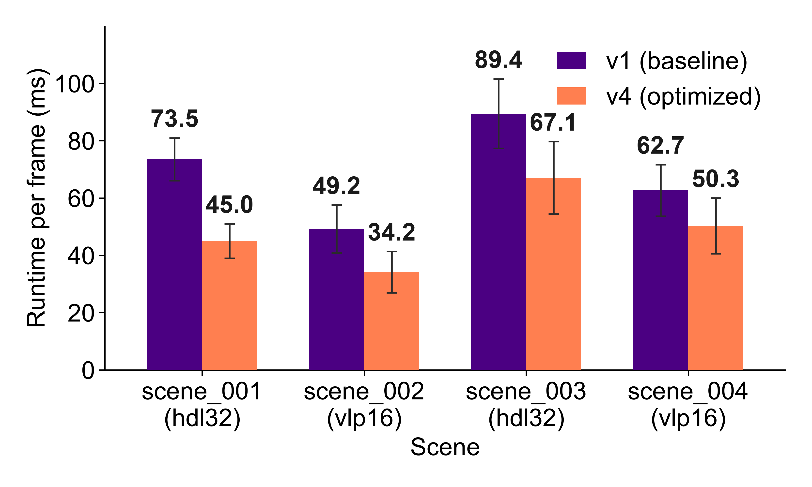
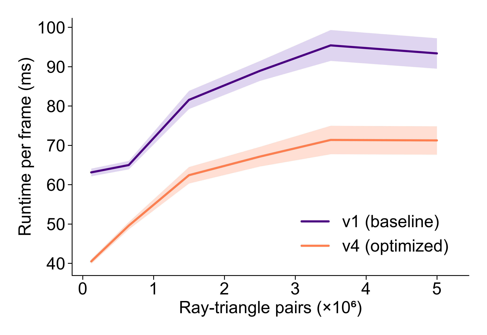
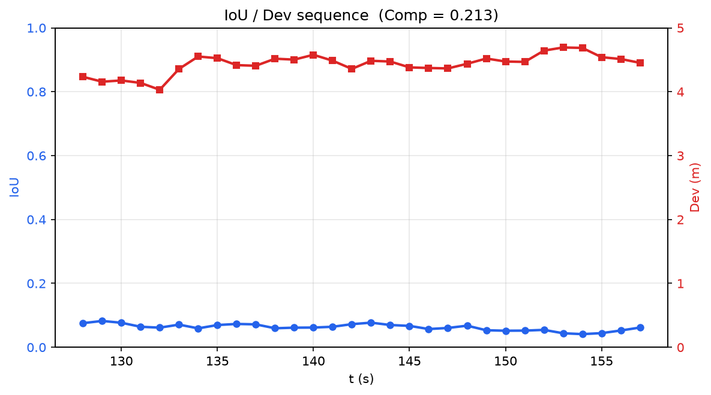
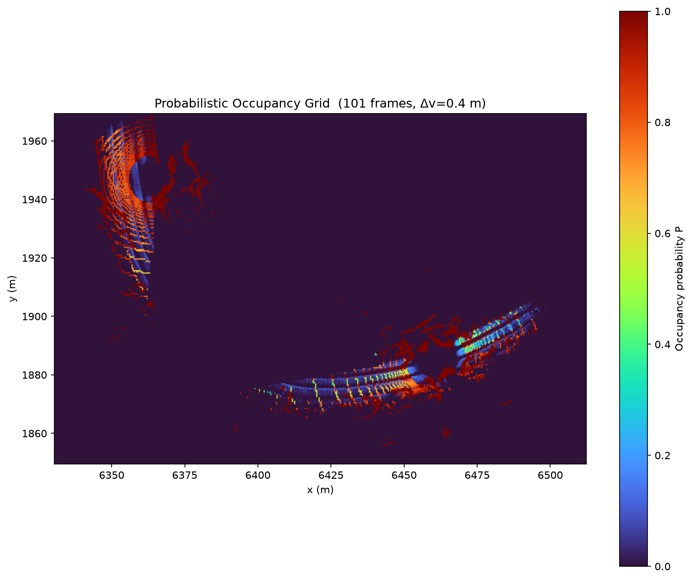

车路协同感知
路侧与车端点云按目标融合，遮挡区域互补，同一目标获得更完整的观测。

车路协同感知 · 点云仿真 · SUMO 联动
LidarSIM 以真实道路环境点云为背景，基于 GPU 并行 ray-casting 仿真多路路侧与车载 LiDAR， 内置物理强度、扫描时序运动伪影、雨雪杂波与多雷达布设对比，并将感知结果回写 SUMO 形成闭环， 为车路协同感知研究提供可复现的仿真与评价平台。
同一套仿真内核输出路侧、车端与多视角点云，光束模式、逐束时刻与噪声模型保持一致。
路侧与车端点云按目标融合，遮挡区域互补，同一目标获得更完整的观测。
雨、雪粒子谱驱动消光、后向散射与虚假回波，支持感知鲁棒性测试。

车载 LiDAR 逐帧位姿与逐束扫描时刻，复现真实运动伪影与自车遮挡。
雷达高度、角度与数量的变化，实时反映在覆盖范围与协同 IoU 上。
相同交通流、不同部署条件 · 真实路侧点云背景
在不改变任何一帧点云的前提下，重构环境求交与车辆求交的关键路径。

四个场景的单帧平均耗时（cold 口径，误差棒 ±1 标准差）。

单帧耗时随光线–三角面对数量的变化（折线 + 95% 置信带）。
覆盖机械旋转、转镜与非重复扫描三类扫描方式，量程 100–260 m，可按路侧或车端传感器自由选择。
2 × 5 预设展示 · 相同场景与交通流
每一步 SUMO 交通状态驱动在线轨迹，LidarSIM 生成路侧与车端点云并完成 L-shape 协同感知评估； IoU 与感知状态写回 SUMO 车辆颜色与自定义参数，可选 TTC 闭环减速。

SUMO ↔ LidarSIM：状态驱动与感知反馈的闭环。

SUMO netedit 风格的点云底图编辑器，导出 net.xml 与可直接运行的场景。

多车型、多传感器的安装位姿配置，俯 / 侧 / 正视图预览覆盖范围。
SUMO 交通与 LidarSIM 点云锁步推进，感知结果逐步回传。
L-shape 拟合与 3D IoU / Dev / Comp 指标，支持分车型统计与 CSV 导出。
逐帧输出协同 IoU 与真值框，匹配与未匹配目标同时上报。

单次仿真的指标时序，可导出 CSV 进一步分析。
逐帧占用平均与观测掩码，支持 BEV / 3D 可视化与 NPZ / MAT 导出。
占用概率随轨迹逐帧累积。

累积占用概率的俯视展示。
指定起止帧后，LidarSIM 可导出 OpenCOOD（OPV2V 风格）标注数据：每帧生成协同感知点云与 GT BBox， 按场景编号归档，可直接用于多车辆协同感知模型训练。